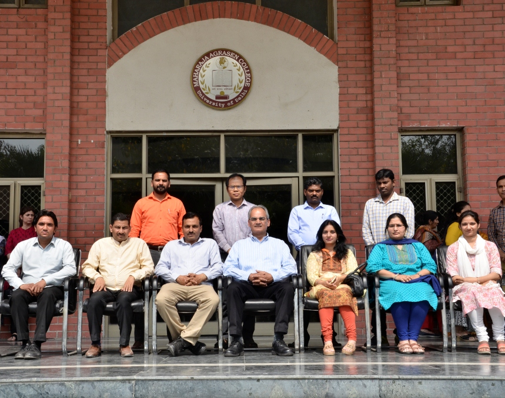

DEPARTMENT OF MATHEMATICAL SCIENCE
The Department of Mathematical Sciences seeks to enhance the student’s knowledge of mathematical, quantitative and scientific principles that can be applied to various fields of applications to enable analytical decision making. The course aims to create a solid foundation for assimilation of mathematical concepts and structures and build mathematical skills like creative, logical and analytical thinking.
This well structured programme enhances students employability skills and also their ability to articulate these skills. The subject of mathematics is gaining greater importance in the complex and rapidly changing world today. Data Analytics experts, Actuaries, Statisticians, experts in computation skills are in great demand and it requires a solid foundation in mathematics. The study of this course shall be of immense help for pursuing a career in fields like Economics, Physics, Engineering, Management Science, Computer Science, Operational Research, Mathematics and several others. The department organizes various lectures to provide exposure to students about newer development in the subject. Workshops are also conducted to enhance skills which are helpful in securing better avenues in the highly demanding job-market.
Our faculty members Dr Sushil Yadav and Dr Awadhesh Kumar Poddar presented their research papers in the National Conference on ‘Advances in Applied Mathematics and Statistics’ organized by Department of Mathematics, Mata Sundri College, University of Delhi, held on 7-8 September 2017.
